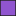
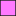

<!doctype html>
<html lang="en">
    <head>
        <meta charset="utf-8">
        <meta http-equiv="X-UA-Compatible" content="IE=edge">
        <meta name="viewport" content="initial-scale=1,user-scalable=no,maximum-scale=1,width=device-width">
        <meta name="mobile-web-app-capable" content="yes">
        <meta name="apple-mobile-web-app-capable" content="yes">
        <link rel="stylesheet" href="css/leaflet.css">
        <link rel="stylesheet" href="css/L.Control.Layers.Tree.css">
        <link rel="stylesheet" href="css/L.Control.Locate.min.css">
        <link rel="stylesheet" href="css/qgis2web.css">
        <link rel="stylesheet" href="css/fontawesome-all.min.css">
        <link rel="stylesheet" href="css/leaflet-control-geocoder.Geocoder.css">
        <style>
        html, body, #map {
            width: 100%;
            height: 100%;
            padding: 0;
            margin: 0;
        }
        </style>
        <title></title>
    </head>
    <body>
        <div id="map">
        </div>
        <script src="js/qgis2web_expressions.js"></script>
        <script src="js/leaflet.js"></script>
        <script src="js/L.Control.Layers.Tree.min.js"></script>
        <script src="js/L.Control.Locate.min.js"></script>
        <script src="js/leaflet.rotatedMarker.js"></script>
        <script src="js/leaflet.pattern.js"></script>
        <script src="js/leaflet-hash.js"></script>
        <script src="js/Autolinker.min.js"></script>
        <script src="js/rbush.min.js"></script>
        <script src="js/labelgun.min.js"></script>
        <script src="js/labels.js"></script>
        <script src="js/leaflet-control-geocoder.Geocoder.js"></script>
        <script src="data/Surabaya_1.js"></script>
        <script src="data/Jalan_2.js"></script>
        <script src="data/Stasiun_3.js"></script>
        <script src="data/Terjangkau3000m_4.js"></script>
        <script src="data/Terjangkau1500m_5.js"></script>
        <script src="data/Terjangkau500m_6.js"></script>
        <script src="data/RelKereta_7.js"></script>
        <script>
        var map = L.map('map', {
            zoomControl:false, maxZoom:28, minZoom:1
        }).fitBounds([[-7.392056691381879,112.52650639460953],[-7.103766861781511,112.92237755086563]]);
        var hash = new L.Hash(map);
        map.attributionControl.setPrefix('<a href="https://github.com/tomchadwin/qgis2web" target="_blank">qgis2web</a> &middot; <a href="https://leafletjs.com" title="A JS library for interactive maps">Leaflet</a> &middot; <a href="https://qgis.org">QGIS</a>');
        var autolinker = new Autolinker({truncate: {length: 30, location: 'smart'}});
        // remove popup's row if "visible-with-data"
        function removeEmptyRowsFromPopupContent(content, feature) {
         var tempDiv = document.createElement('div');
         tempDiv.innerHTML = content;
         var rows = tempDiv.querySelectorAll('tr');
         for (var i = 0; i < rows.length; i++) {
             var td = rows[i].querySelector('td.visible-with-data');
             var key = td ? td.id : '';
             if (td && td.classList.contains('visible-with-data') && feature.properties[key] == null) {
                 rows[i].parentNode.removeChild(rows[i]);
             }
         }
         return tempDiv.innerHTML;
        }
        // add class to format popup if it contains media
		function addClassToPopupIfMedia(content, popup) {
			var tempDiv = document.createElement('div');
			tempDiv.innerHTML = content;
			if (tempDiv.querySelector('td img')) {
				popup._contentNode.classList.add('media');
					// Delay to force the redraw
					setTimeout(function() {
						popup.update();
					}, 10);
			} else {
				popup._contentNode.classList.remove('media');
			}
		}
        var zoomControl = L.control.zoom({
            position: 'topleft'
        }).addTo(map);
        L.control.locate({locateOptions: {maxZoom: 19}}).addTo(map);
        var bounds_group = new L.featureGroup([]);
        function setBounds() {
        }
        map.createPane('pane_ESRIStandard_0');
        map.getPane('pane_ESRIStandard_0').style.zIndex = 400;
        var layer_ESRIStandard_0 = L.tileLayer('https://server.arcgisonline.com/ArcGIS/rest/services/World_Street_Map/MapServer/tile/{z}/{y}/{x}', {
            pane: 'pane_ESRIStandard_0',
            opacity: 1.0,
            attribution: '',
            minZoom: 1,
            maxZoom: 28,
            minNativeZoom: 0,
            maxNativeZoom: 20
        });
        layer_ESRIStandard_0;
        map.addLayer(layer_ESRIStandard_0);
        function pop_Surabaya_1(feature, layer) {
            var popupContent = '<table>\
                    <tr>\
                        <th scope="row">WADMPR</th>\
                        <td class="visible-with-data" id="WADMPR">' + (feature.properties['WADMPR'] !== null ? autolinker.link(feature.properties['WADMPR'].toLocaleString()) : '') + '</td>\
                    </tr>\
                </table>';
            var content = removeEmptyRowsFromPopupContent(popupContent, feature);
			layer.on('popupopen', function(e) {
				addClassToPopupIfMedia(content, e.popup);
			});
			layer.bindPopup(content, { maxHeight: 400 });
        }

        function style_Surabaya_1_0() {
            return {
                pane: 'pane_Surabaya_1',
                opacity: 1,
                color: 'rgba(0,0,0,1.0)',
                dashArray: '',
                lineCap: 'butt',
                lineJoin: 'miter',
                weight: 1.0, 
                fill: true,
                fillOpacity: 1,
                fillColor: 'rgba(69,116,40,1.0)',
                interactive: true,
            }
        }
        map.createPane('pane_Surabaya_1');
        map.getPane('pane_Surabaya_1').style.zIndex = 401;
        map.getPane('pane_Surabaya_1').style['mix-blend-mode'] = 'normal';
        var layer_Surabaya_1 = new L.geoJson(json_Surabaya_1, {
            attribution: '',
            interactive: true,
            dataVar: 'json_Surabaya_1',
            layerName: 'layer_Surabaya_1',
            pane: 'pane_Surabaya_1',
            onEachFeature: pop_Surabaya_1,
            style: style_Surabaya_1_0,
        });
        bounds_group.addLayer(layer_Surabaya_1);
        map.addLayer(layer_Surabaya_1);
        function pop_Jalan_2(feature, layer) {
            var popupContent = '<table>\
                </table>';
            var content = removeEmptyRowsFromPopupContent(popupContent, feature);
			layer.on('popupopen', function(e) {
				addClassToPopupIfMedia(content, e.popup);
			});
			layer.bindPopup(content, { maxHeight: 400 });
        }

        function style_Jalan_2_0() {
            return {
                pane: 'pane_Jalan_2',
                opacity: 1,
                color: 'rgba(133,182,111,1.0)',
                dashArray: '',
                lineCap: 'square',
                lineJoin: 'bevel',
                weight: 1.0,
                fillOpacity: 0,
                interactive: true,
            }
        }
        map.createPane('pane_Jalan_2');
        map.getPane('pane_Jalan_2').style.zIndex = 402;
        map.getPane('pane_Jalan_2').style['mix-blend-mode'] = 'normal';
        var layer_Jalan_2 = new L.geoJson(json_Jalan_2, {
            attribution: '',
            interactive: true,
            dataVar: 'json_Jalan_2',
            layerName: 'layer_Jalan_2',
            pane: 'pane_Jalan_2',
            onEachFeature: pop_Jalan_2,
            style: style_Jalan_2_0,
        });
        bounds_group.addLayer(layer_Jalan_2);
        map.addLayer(layer_Jalan_2);
        function pop_Stasiun_3(feature, layer) {
            var popupContent = '<table>\
                    <tr>\
                        <th scope="row">Name</th>\
                        <td class="visible-with-data" id="Name">' + (feature.properties['Name'] !== null ? autolinker.link(feature.properties['Name'].toLocaleString()) : '') + '</td>\
                    </tr>\
                    <tr>\
                        <th scope="row">Alamat</th>\
                        <td class="visible-with-data" id="Alamat">' + (feature.properties['Alamat'] !== null ? autolinker.link(feature.properties['Alamat'].toLocaleString()) : '') + '</td>\
                    </tr>\
                    <tr>\
                        <th scope="row">Foto</th>\
                        <td class="visible-with-data" id="Foto">' + (feature.properties['Foto'] !== null ? '' : '') + '</td>\
                    </tr>\
                </table>';
            var content = removeEmptyRowsFromPopupContent(popupContent, feature);
			layer.on('popupopen', function(e) {
				addClassToPopupIfMedia(content, e.popup);
			});
			layer.bindPopup(content, { maxHeight: 400 });
        }

        function style_Stasiun_3_0() {
            return {
                pane: 'pane_Stasiun_3',
                radius: 4.0,
                opacity: 1,
                color: 'rgba(0,0,0,1.0)',
                dashArray: '',
                lineCap: 'butt',
                lineJoin: 'miter',
                weight: 2.0,
                fill: true,
                fillOpacity: 1,
                fillColor: 'rgba(255,255,255,1.0)',
                interactive: true,
            }
        }
        map.createPane('pane_Stasiun_3');
        map.getPane('pane_Stasiun_3').style.zIndex = 403;
        map.getPane('pane_Stasiun_3').style['mix-blend-mode'] = 'normal';
        var layer_Stasiun_3 = new L.geoJson(json_Stasiun_3, {
            attribution: '',
            interactive: true,
            dataVar: 'json_Stasiun_3',
            layerName: 'layer_Stasiun_3',
            pane: 'pane_Stasiun_3',
            onEachFeature: pop_Stasiun_3,
            pointToLayer: function (feature, latlng) {
                var context = {
                    feature: feature,
                    variables: {}
                };
                return L.circleMarker(latlng, style_Stasiun_3_0(feature));
            },
        });
        bounds_group.addLayer(layer_Stasiun_3);
        map.addLayer(layer_Stasiun_3);
        function pop_Terjangkau3000m_4(feature, layer) {
            var popupContent = '<table>\
                    <tr>\
                        <th scope="row">Radius</th>\
                        <td class="visible-with-data" id="Radius">' + (feature.properties['Radius'] !== null ? autolinker.link(feature.properties['Radius'].toLocaleString()) : '') + '</td>\
                    </tr>\
                </table>';
            var content = removeEmptyRowsFromPopupContent(popupContent, feature);
			layer.on('popupopen', function(e) {
				addClassToPopupIfMedia(content, e.popup);
			});
			layer.bindPopup(content, { maxHeight: 400 });
        }

        function style_Terjangkau3000m_4_0() {
            return {
                pane: 'pane_Terjangkau3000m_4',
                opacity: 1,
                color: 'rgba(35,35,35,1.0)',
                dashArray: '',
                lineCap: 'butt',
                lineJoin: 'miter',
                weight: 1.0, 
                fill: true,
                fillOpacity: 1,
                fillColor: 'rgba(225,89,137,1.0)',
                interactive: true,
            }
        }
        map.createPane('pane_Terjangkau3000m_4');
        map.getPane('pane_Terjangkau3000m_4').style.zIndex = 404;
        map.getPane('pane_Terjangkau3000m_4').style['mix-blend-mode'] = 'normal';
        var layer_Terjangkau3000m_4 = new L.geoJson(json_Terjangkau3000m_4, {
            attribution: '',
            interactive: true,
            dataVar: 'json_Terjangkau3000m_4',
            layerName: 'layer_Terjangkau3000m_4',
            pane: 'pane_Terjangkau3000m_4',
            onEachFeature: pop_Terjangkau3000m_4,
            style: style_Terjangkau3000m_4_0,
        });
        bounds_group.addLayer(layer_Terjangkau3000m_4);
        map.addLayer(layer_Terjangkau3000m_4);
        function pop_Terjangkau1500m_5(feature, layer) {
            var popupContent = '<table>\
                    <tr>\
                        <th scope="row">Radius</th>\
                        <td class="visible-with-data" id="Radius">' + (feature.properties['Radius'] !== null ? autolinker.link(feature.properties['Radius'].toLocaleString()) : '') + '</td>\
                    </tr>\
                </table>';
            var content = removeEmptyRowsFromPopupContent(popupContent, feature);
			layer.on('popupopen', function(e) {
				addClassToPopupIfMedia(content, e.popup);
			});
			layer.bindPopup(content, { maxHeight: 400 });
        }

        function style_Terjangkau1500m_5_0() {
            return {
                pane: 'pane_Terjangkau1500m_5',
                opacity: 1,
                color: 'rgba(35,35,35,1.0)',
                dashArray: '',
                lineCap: 'butt',
                lineJoin: 'miter',
                weight: 1.0, 
                fill: true,
                fillOpacity: 1,
                fillColor: 'rgba(255,121,255,1.0)',
                interactive: true,
            }
        }
        map.createPane('pane_Terjangkau1500m_5');
        map.getPane('pane_Terjangkau1500m_5').style.zIndex = 405;
        map.getPane('pane_Terjangkau1500m_5').style['mix-blend-mode'] = 'normal';
        var layer_Terjangkau1500m_5 = new L.geoJson(json_Terjangkau1500m_5, {
            attribution: '',
            interactive: true,
            dataVar: 'json_Terjangkau1500m_5',
            layerName: 'layer_Terjangkau1500m_5',
            pane: 'pane_Terjangkau1500m_5',
            onEachFeature: pop_Terjangkau1500m_5,
            style: style_Terjangkau1500m_5_0,
        });
        bounds_group.addLayer(layer_Terjangkau1500m_5);
        map.addLayer(layer_Terjangkau1500m_5);
        function pop_Terjangkau500m_6(feature, layer) {
            var popupContent = '<table>\
                    <tr>\
                        <th scope="row">Radius</th>\
                        <td class="visible-with-data" id="Radius">' + (feature.properties['Radius'] !== null ? autolinker.link(feature.properties['Radius'].toLocaleString()) : '') + '</td>\
                    </tr>\
                </table>';
            var content = removeEmptyRowsFromPopupContent(popupContent, feature);
			layer.on('popupopen', function(e) {
				addClassToPopupIfMedia(content, e.popup);
			});
			layer.bindPopup(content, { maxHeight: 400 });
        }

        function style_Terjangkau500m_6_0() {
            return {
                pane: 'pane_Terjangkau500m_6',
                opacity: 1,
                color: 'rgba(35,35,35,1.0)',
                dashArray: '',
                lineCap: 'butt',
                lineJoin: 'miter',
                weight: 1.0, 
                fill: true,
                fillOpacity: 1,
                fillColor: 'rgba(144,85,207,1.0)',
                interactive: true,
            }
        }
        map.createPane('pane_Terjangkau500m_6');
        map.getPane('pane_Terjangkau500m_6').style.zIndex = 406;
        map.getPane('pane_Terjangkau500m_6').style['mix-blend-mode'] = 'normal';
        var layer_Terjangkau500m_6 = new L.geoJson(json_Terjangkau500m_6, {
            attribution: '',
            interactive: true,
            dataVar: 'json_Terjangkau500m_6',
            layerName: 'layer_Terjangkau500m_6',
            pane: 'pane_Terjangkau500m_6',
            onEachFeature: pop_Terjangkau500m_6,
            style: style_Terjangkau500m_6_0,
        });
        bounds_group.addLayer(layer_Terjangkau500m_6);
        map.addLayer(layer_Terjangkau500m_6);
        function pop_RelKereta_7(feature, layer) {
            var popupContent = '<table>\
                </table>';
            var content = removeEmptyRowsFromPopupContent(popupContent, feature);
			layer.on('popupopen', function(e) {
				addClassToPopupIfMedia(content, e.popup);
			});
			layer.bindPopup(content, { maxHeight: 400 });
        }

        function style_RelKereta_7_0() {
            return {
                pane: 'pane_RelKereta_7',
                opacity: 1,
                color: 'rgba(0,0,0,1.0)',
                dashArray: '2.0,4.0',
                lineCap: 'round',
                lineJoin: 'round',
                weight: 2.0,
                fillOpacity: 0,
                interactive: true,
            }
        }
        map.createPane('pane_RelKereta_7');
        map.getPane('pane_RelKereta_7').style.zIndex = 407;
        map.getPane('pane_RelKereta_7').style['mix-blend-mode'] = 'normal';
        var layer_RelKereta_7 = new L.geoJson(json_RelKereta_7, {
            attribution: '',
            interactive: true,
            dataVar: 'json_RelKereta_7',
            layerName: 'layer_RelKereta_7',
            pane: 'pane_RelKereta_7',
            onEachFeature: pop_RelKereta_7,
            style: style_RelKereta_7_0,
        });
        bounds_group.addLayer(layer_RelKereta_7);
        map.addLayer(layer_RelKereta_7);
        var osmGeocoder = new L.Control.Geocoder({
            collapsed: true,
            position: 'topleft',
            text: 'Search',
            title: 'Testing'
        }).addTo(map);
        document.getElementsByClassName('leaflet-control-geocoder-icon')[0]
        .className += ' fa fa-search';
        document.getElementsByClassName('leaflet-control-geocoder-icon')[0]
        .title += 'Search for a place';
        var baseMaps = {};
        var overlaysTree = [
            {label: ' Rel Kereta', layer: layer_RelKereta_7},
        {label: '<b>Terjangkau</b>', selectAllCheckbox: true, children: [
            {label: ' Terjangkau 500m', layer: layer_Terjangkau500m_6},
            {label: ' Terjangkau 1500m', layer: layer_Terjangkau1500m_5},
            {label: ' Terjangkau 3000m', layer: layer_Terjangkau3000m_4},]},
            {label: ' Stasiun', layer: layer_Stasiun_3},
            {label: ' Jalan', layer: layer_Jalan_2},
            {label: ' Surabaya', layer: layer_Surabaya_1},
            {label: "ESRI Standard", layer: layer_ESRIStandard_0},]
        var lay = L.control.layers.tree(null, overlaysTree,{
            //namedToggle: true,
            //selectorBack: false,
            //closedSymbol: '&#8862; &#x1f5c0;',
            //openedSymbol: '&#8863; &#x1f5c1;',
            //collapseAll: 'Collapse all',
            //expandAll: 'Expand all',
            collapsed: true,
        });
        lay.addTo(map);
        setBounds();
        </script>
    </body>
</html>
